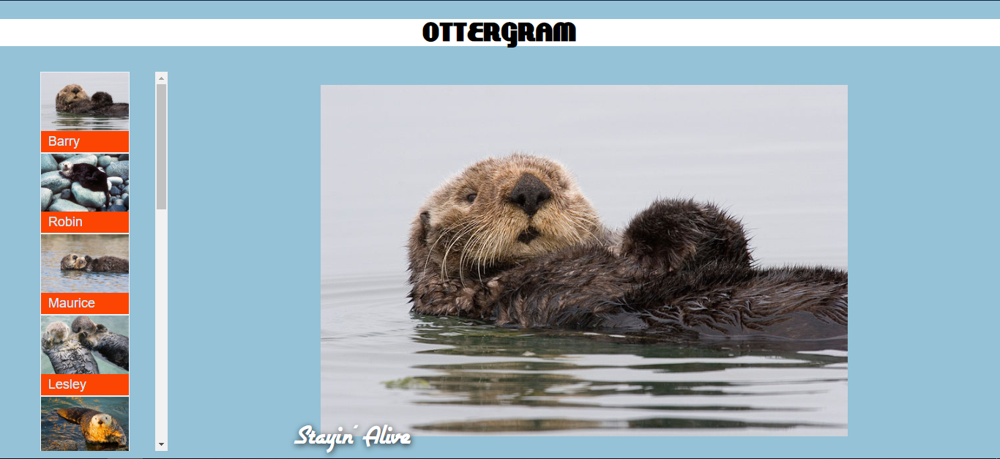
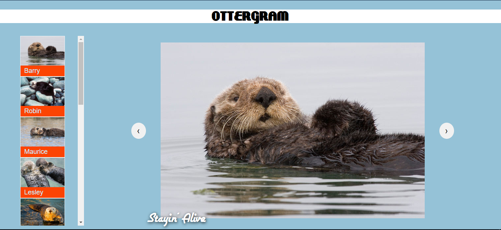
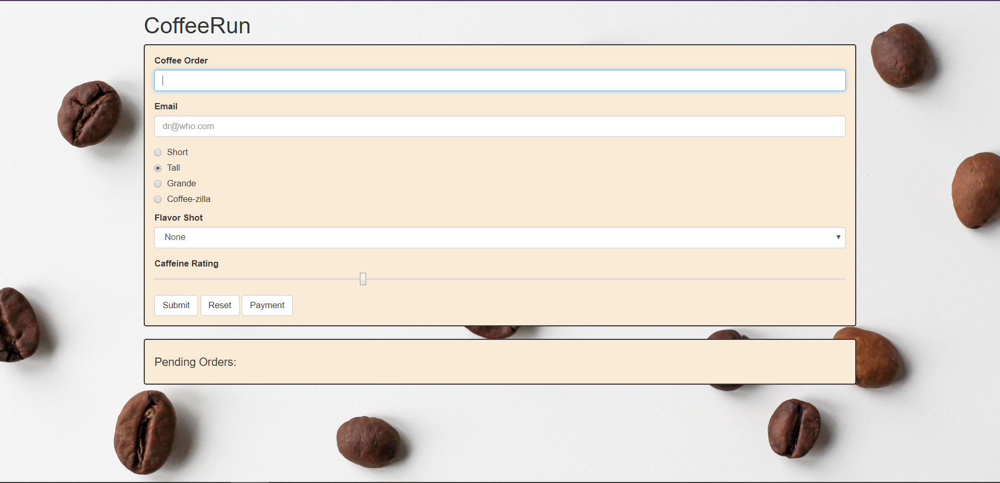
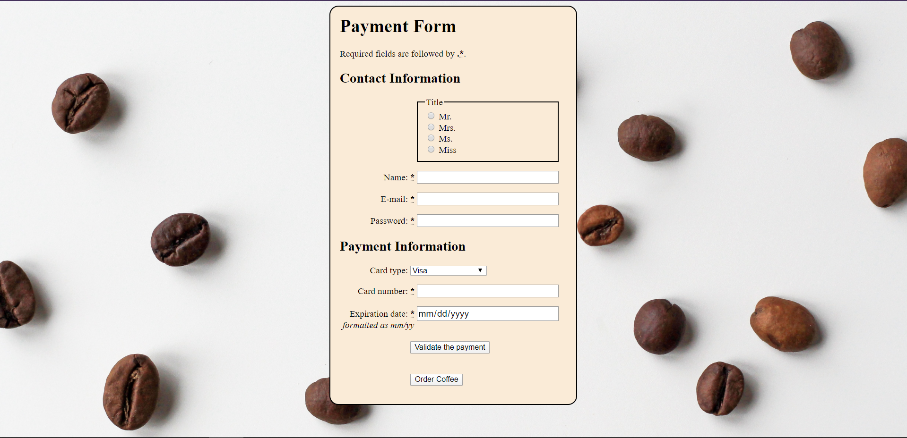
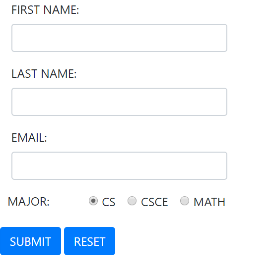

In this project I created a web-based photo gallery. Building Ottergram
taught me the fundamentals of programming for the browser using HTML, CSS,
and JavaScript. I built the user interface manually, learning how the browser
loads and renders content.

This is an extension to the Ottergram. You can now cycle through thumbnails with arrow buttons.


A shopping-cart style application called CoffeeRun
that manages coffee orders for a food truck.
CoffeeRun has three layers of code: the UI, the internal logic, and the server communication.

A shopping-cart style application called CoffeeRun
that manages coffee orders for a food truck.
CoffeeRun has three layers of code: the UI, the internal logic, and the server communication. USING FIREBASE